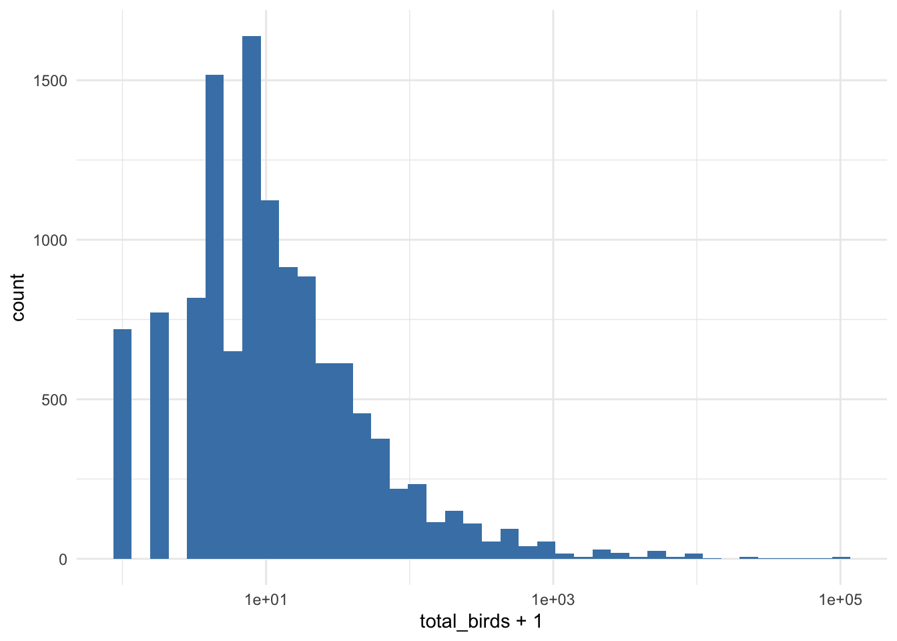
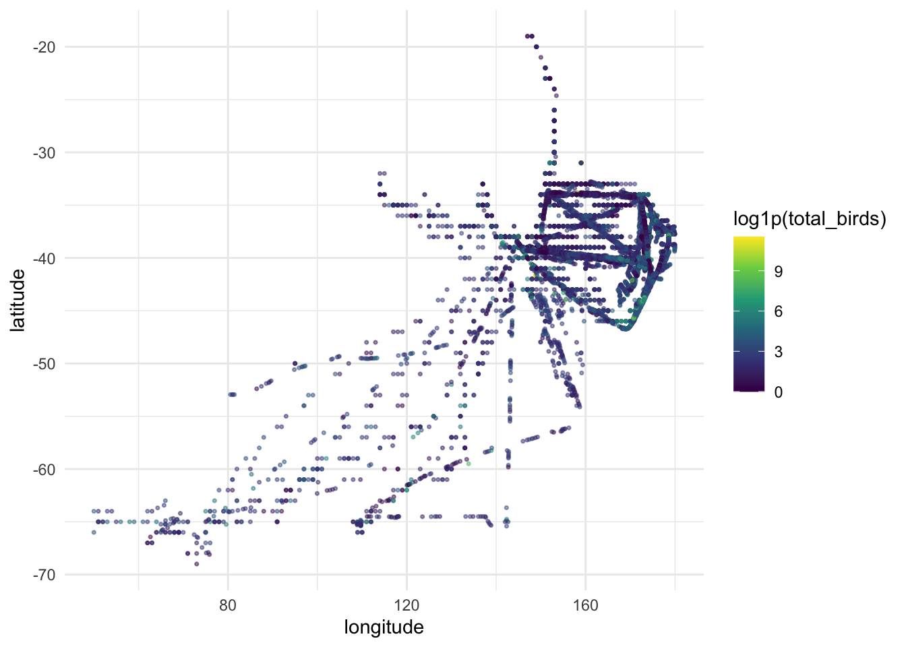
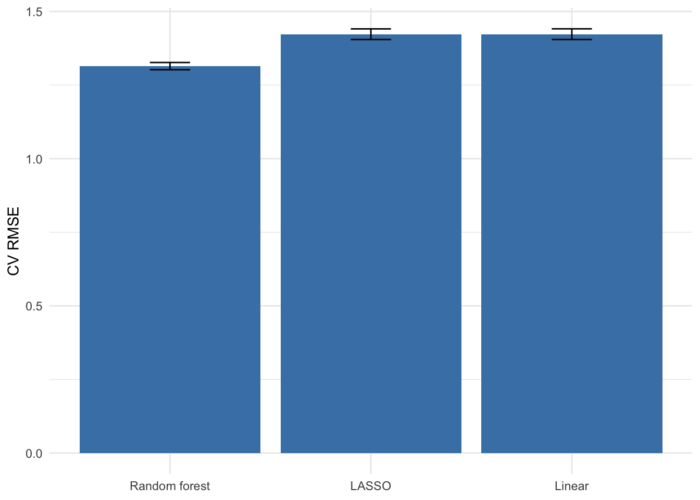
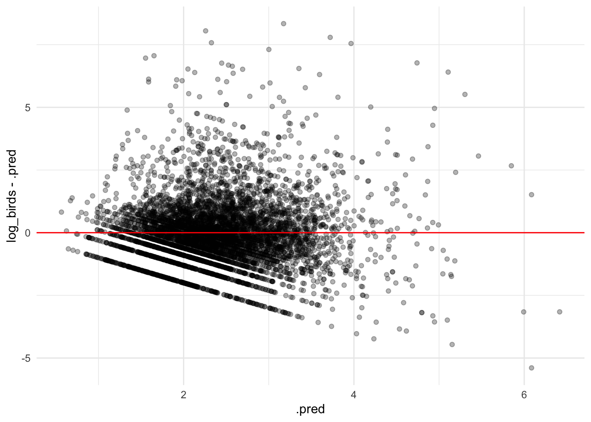
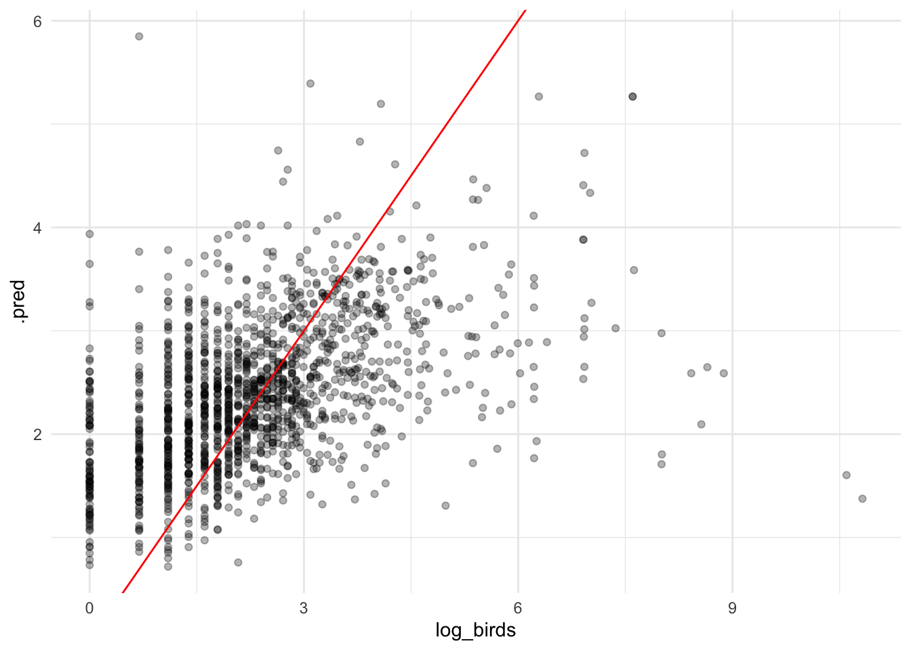
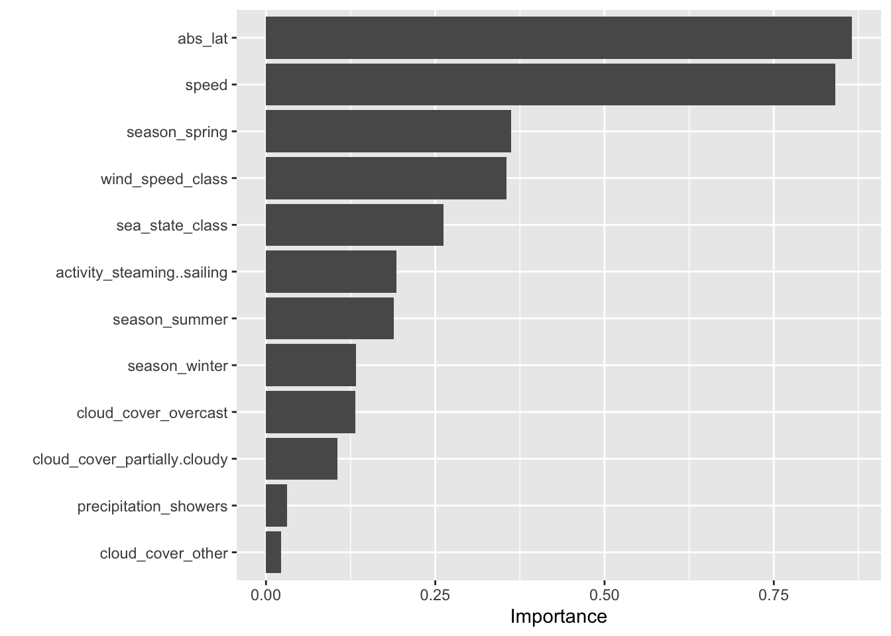

TidyTuesday Exercise: Bird Sightings at Sea (2026-04-14)
TidyTuesday week of 2026-04-14: log-book entries of seabird sightings near New Zealand, 1969–1990. Data from the Australasian Seabird Mapping Scheme via Te Papa Tongarewa.
Setup
library(tidyverse)
-- Attaching core tidyverse packages ------------------------ tidyverse 2.0.0 --
v dplyr 1.1.4 v readr 2.1.5
v forcats 1.0.1 v stringr 1.5.2
v ggplot2 4.0.0 v tibble 3.3.0
v lubridate 1.9.4 v tidyr 1.3.1
v purrr 1.1.0
-- Conflicts ------------------------------------------ tidyverse_conflicts() --
x dplyr::filter() masks stats::filter()
x dplyr::lag() masks stats::lag()
i Use the conflicted package (<http://conflicted.r-lib.org/>) to force all conflicts to become errors
library(tidymodels)
-- Attaching packages -------------------------------------- tidymodels 1.4.1 --
v broom 1.0.10 v rsample 1.3.1
v dials 1.4.2 v tailor 0.1.0
v infer 1.1.0 v tune 2.0.1
v modeldata 1.5.1 v workflows 1.3.0
v parsnip 1.4.1 v workflowsets 1.1.1
v recipes 1.3.1 v yardstick 1.3.2
Warning: package 'infer' was built under R version 4.4.3
Warning: package 'parsnip' was built under R version 4.4.3
-- Conflicts ----------------------------------------- tidymodels_conflicts() --
x scales::discard() masks purrr::discard()
x dplyr::filter() masks stats::filter()
x recipes::fixed() masks stringr::fixed()
x dplyr::lag() masks stats::lag()
x yardstick::spec() masks readr::spec()
x recipes::step() masks stats::step()
library(ranger)library(glmnet)
Loading required package: Matrix
Attaching package: 'Matrix'
The following objects are masked from 'package:tidyr':
expand, pack, unpack
Loaded glmnet 4.1-10
library(vip)
Warning: package 'vip' was built under R version 4.4.3
Attaching package: 'vip'
The following object is masked from 'package:utils':
vi
Warning: One or more parsing issues, call `problems()` on your data frame for details,
e.g.:
dat <- vroom(...)
problems(dat)
Rows: 49019 Columns: 26
-- Column specification --------------------------------------------------------
Delimiter: ","
chr (6): species_common_name, species_scientific_name, species_abbreviation...
dbl (9): bird_observation_id, record_id, count, n_feeding, n_sitting_on_wat...
lgl (11): sex, feeding, sitting_on_water, sitting_on_ice, sitting_on_ship, i...
i Use `spec()` to retrieve the full column specification for this data.
i Specify the column types or set `show_col_types = FALSE` to quiet this message.
Rows: 12310 Columns: 21
-- Column specification --------------------------------------------------------
Delimiter: ","
chr (7): hemisphere, activity, cloud_cover, precipitation, observer, censu...
dbl (12): record_id, latitude, longitude, speed, direction, wind_speed_clas...
date (1): date
time (1): time
i Use `spec()` to retrieve the full column specification for this data.
i Specify the column types or set `show_col_types = FALSE` to quiet this message.
Rows: 13 Columns: 4
-- Column specification --------------------------------------------------------
Delimiter: ","
chr (1): wind_description
dbl (3): wind_speed_class, wind_speed_knots_min, wind_speed_knots_max
i Use `spec()` to retrieve the full column specification for this data.
i Specify the column types or set `show_col_types = FALSE` to quiet this message.
Rows: 7 Columns: 4
-- Column specification --------------------------------------------------------
Delimiter: ","
chr (1): sea_state_description
dbl (3): sea_state_class, wave_meters_min, wave_meters_max
i Use `spec()` to retrieve the full column specification for this data.
i Specify the column types or set `show_col_types = FALSE` to quiet this message.
Data cleaning and joining
Aggregate birds to one row per ship record, then join environmental data.
# Collapse multiple species rows per ship record into one total countbird_per_record <- birds |>group_by(record_id) |>summarise(total_birds =sum(count, na.rm =TRUE), .groups ="drop")# Join birds + lookup tables to ships; records with no birds get 0df <- ships |>left_join(bird_per_record, by ="record_id") |>left_join(beaufort, by ="wind_speed_class") |>left_join(sea_states, by ="sea_state_class") |>mutate(total_birds =replace_na(total_birds, 0),abs_lat =abs(latitude) # distance from equator )
Exploratory data analysis
# Heavy right-skew motivates a log1p outcomeggplot(df, aes(total_birds +1)) +geom_histogram(bins =40, fill ="steelblue") +scale_x_log10() +theme_minimal()

The outcome is heavily right-skewed, so we model log1p(total_birds).
# Spatial pattern shows a clear latitudinal gradient -> use abs_lat.ggplot(df, aes(longitude, latitude, color =log1p(total_birds))) +geom_point(alpha =0.5, size =0.6) +scale_color_viridis_c() +theme_minimal()
Warning: Removed 11 rows containing missing values or values outside the scale range
(`geom_point()`).

Question
Can environmental conditions and ship activity predict seabird abundance? Hypothesis: more birds at higher latitudes, in rougher seas, and during trawling-related activities.
Preprocessing and split
# Outcome + predictors only; drop rows missing the outcome or core predictors.model_df <- df |>transmute(log_birds =log1p(total_birds),wind_speed_class =as.integer(wind_speed_class),sea_state_class =as.integer(sea_state_class), abs_lat,speed =as.numeric(speed),cloud_cover =factor(cloud_cover),precipitation =factor(precipitation),activity =factor(activity),season =factor(season) ) |>drop_na(log_birds, wind_speed_class, sea_state_class, abs_lat, season, activity)# 80/20 stratified split + 5-fold CV on the training set.split <-initial_split(model_df, prop =0.8, strata = log_birds)train <-training(split); test <-testing(split)folds <-vfold_cv(train, v =5, strata = log_birds)# Shared recipe: impute, lump rare levels, dummy-encode, normalize.rec <-recipe(log_birds ~ ., data = train) |>step_impute_median(all_numeric_predictors()) |>step_unknown(all_nominal_predictors()) |>step_other(all_nominal_predictors(), threshold =0.02) |>step_dummy(all_nominal_predictors()) |>step_zv(all_predictors()) |>step_normalize(all_numeric_predictors())mset <-metric_set(rmse, rsq, mae) # same metrics for all models
Models
Linear regression
# Interpretable baseline: OLS on the shared recipelm_wf <-workflow() |>add_recipe(rec) |>add_model(linear_reg() |>set_engine("lm"))lm_cv <-fit_resamples(lm_wf, folds, metrics = mset)collect_metrics(lm_cv)
# A tibble: 3 x 6
.metric .estimator mean n std_err .config
<chr> <chr> <dbl> <int> <dbl> <chr>
1 mae standard 1.02 5 0.00850 pre0_mod0_post0
2 rmse standard 1.42 5 0.0181 pre0_mod0_post0
3 rsq standard 0.0700 5 0.00410 pre0_mod0_post0
LASSO
# Linear with L1 penalty; tune penalty on a log grid 1e-4..1.lasso_wf <-workflow() |>add_recipe(rec) |>add_model(linear_reg(penalty =tune(), mixture =1) |>set_engine("glmnet"))lasso_tune <-tune_grid( lasso_wf, folds,grid =grid_regular(penalty(range =c(-4, 0)), levels =20),metrics = mset)
> A | warning: A correlation computation is required, but `estimate` is constant and has 0
standard deviation, resulting in a divide by 0 error. `NA` will be returned.
There were issues with some computations A: x3
There were issues with some computations A: x9
There were issues with some computations A: x15
show_best(lasso_tune, metric ="rmse", n =3)
# A tibble: 3 x 7
penalty .metric .estimator mean n std_err .config
<dbl> <chr> <chr> <dbl> <int> <dbl> <chr>
1 0.00298 rmse standard 1.42 5 0.0181 pre0_mod08_post0
2 0.00183 rmse standard 1.42 5 0.0181 pre0_mod07_post0
3 0.00113 rmse standard 1.42 5 0.0181 pre0_mod06_post0
Random forest
# Captures non-linearities and interactions; tune mtry and min_n.rf_wf <-workflow() |>add_recipe(rec) |>add_model(rand_forest(mtry =tune(), min_n =tune(), trees =500) |>set_engine("ranger", importance ="permutation") |>set_mode("regression"))rf_tune <-tune_grid( rf_wf, folds,grid =grid_regular(mtry(c(2, 8)), min_n(c(2, 20)), levels =4),metrics = mset,control =control_grid(save_pred =TRUE) # keep CV predictions for residual plot)show_best(rf_tune, metric ="rmse", n =3)
# A tibble: 3 x 8
mtry min_n .metric .estimator mean n std_err .config
<int> <int> <chr> <chr> <dbl> <int> <dbl> <chr>
1 6 14 rmse standard 1.31 5 0.0123 pre0_mod11_post0
2 6 8 rmse standard 1.31 5 0.0126 pre0_mod10_post0
3 8 14 rmse standard 1.32 5 0.0128 pre0_mod15_post0
CV comparison
# Pull the best tuned config from each tuned model for a fair comparison.best_lasso <-select_best(lasso_tune, metric ="rmse")best_rf <-select_best(rf_tune, metric ="rmse")cv_results <-bind_rows(collect_metrics(lm_cv) |>mutate(model ="Linear"),collect_metrics(lasso_tune) |>semi_join(best_lasso, by =".config") |>mutate(model ="LASSO"),collect_metrics(rf_tune) |>semi_join(best_rf, by =".config") |>mutate(model ="Random forest")) |>select(model, .metric, mean, std_err) |>arrange(.metric, mean)cv_results
# A tibble: 9 x 4
model .metric mean std_err
<chr> <chr> <dbl> <dbl>
1 Random forest mae 0.934 0.00856
2 Linear mae 1.02 0.00850
3 LASSO mae 1.02 0.00838
4 Random forest rmse 1.31 0.0123
5 LASSO rmse 1.42 0.0181
6 Linear rmse 1.42 0.0181
7 LASSO rsq 0.0700 0.00407
8 Linear rsq 0.0700 0.00410
9 Random forest rsq 0.207 0.0119
# CV RMSE with 1-SE error bars.cv_results |>filter(.metric =="rmse") |>ggplot(aes(reorder(model, mean), mean,ymin = mean - std_err, ymax = mean + std_err)) +geom_col(fill ="steelblue") +geom_errorbar(width =0.2) +labs(x =NULL, y ="CV RMSE") +theme_minimal()

# Residuals for the best RF: centered on zero indicates no systematic bias.collect_predictions(rf_tune, parameters = best_rf) |>ggplot(aes(.pred, log_birds - .pred)) +geom_point(alpha =0.3) +geom_hline(yintercept =0, color ="red") +theme_minimal()

Selection
The random forest has the lowest CV RMSE and highest R², and captures non-linear effects of latitude, sea state, and ship activity that the linear models miss. We select it as the final model.
Test set
# Train RF with chosen hyperparameters on full train set; evaluate on test once.final_fit <-last_fit(finalize_workflow(rf_wf, best_rf), split, metrics = mset)collect_metrics(final_fit)
# A tibble: 3 x 4
.metric .estimator .estimate .config
<chr> <chr> <dbl> <chr>
1 rmse standard 1.27 pre0_mod0_post0
2 rsq standard 0.218 pre0_mod0_post0
3 mae standard 0.897 pre0_mod0_post0
# Predicted vs. observed; closer to the red 45° line is better.collect_predictions(final_fit) |>ggplot(aes(log_birds, .pred)) +geom_point(alpha =0.3) +geom_abline(color ="red") +theme_minimal()

# Permutation importance from the final RF.final_fit |>extract_fit_parsnip() |>vip(num_features =12)

Discussion
The hypothesis is partly supported. Absolute latitude, Beaufort wind class, sea state, and ship activity are the strongest predictors, with trawling records showing clearly higher counts. Wind effects are non-monotonic — moderate winds yield the highest medians while extremes reduce sightings. Limitations: heavy zero-inflation, missing weather fields, and ship of opportunity sampling. A hurdle model and species specific analyses are natural next steps.